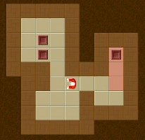
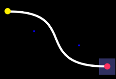
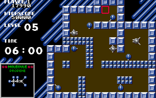

Nagy házi feladat – tudnivalók és feladatlista
Czirkos Zoltán, Nagy Gergely · 2015.02.18 · Frissítve: 2015.02.15
A nagy házi feladat követelményei és a választható feladatok listája.
A tárgyban kötelező egy nagy házi feladat megoldása. A feladat szabadon választott. Lehet a lenti listából is választani, vagy azokhoz hasonló nehézségű, az elvárásoknak megfelelő saját problémák is megoldhatóak. (Egyetlen kivétel a plágiumkereső – azt nem szabad választani, mert az a minta házi.) A választást mindenképpen jóvá kell hagyja a laborvezető.
Pro tip: olyan feladatot válassz, amely számodra is izgalmas! Egy hozzád közel álló, számodra érdekes feladaton sokkal hasznosabb és mellesleg könnyebb is dolgozni, még akkor is, ha programozási szempontból összetettebb.
1Követelmények
A nagy házi feladat a következő követelményeknek kell megfeleljen:
- Kb. 500 soros C program, amely a C nyelv lehetőségeit kihasználja: strukturált felépítés, több modulra bontás, dinamikus memóriakezelés, fájlkezelés.
- A feladatválasztást a laborvezető jóvá kell hagyja.
- Dinamikus memóriakezelés kötelező, programozási komplexitásban legalább a két dimenziós dinamikus tömb. (Olyan feladat nem választható, amelyhez még ennél is primitívebb memóriakezelést kíván csak.)
- A program mellé el kell készüljön a programozói, a tesztelési és a felhasználói dokumentáció.
- A kész megoldás és a dokumentáció bemutatása csak személyesen történhet, legkésőbb az utolsó oktatási hét végéig.
A fentiek között logikai és kapcsolat értendő: ha bármelyik hiányzik, a házi feladat nem elfogadható.
A nagy házi részfeladatai
A hetek során az alábbi részfeladatokat kell megoldani. Az egyes részfeladatok megoldásához példákat mutat a minta nagyházi oldal.
- NHF 1. – választás
- Ez a részfeladat a feladat kiválasztását jelenti. A lentebb látható feladatok közül is lehet választani, vagy saját, hasonló nehézségű feladatot is lehet hozni.
- NHF 2. – specifikáció
- A nagy házi választása után a portálon meghirdetett időpontig fel kell tölteni a házi feladat specifikációját. Ez a kiadott feladat részletekbe menő pontosítása. Ide tartozik a program feladatának leírása, a bemenetek és a várt kimenetek rögzítése (formátumokkal együtt), a program használatának leírása is. A specifikációban még nem kell a program belső felépítésével, működésével kapcsolatos részleteket megadni. A pontosítás célja az, hogy a program megrendelője, és a programot elkészítő programozó ugyanarra gondoljon, és ne a munka végén derüljön fény a félreértésekre. A pontosított specifikáció részletességére jellemző, hogy ha két külön programozó elkészíti a programot ugyanabból a specifikációból, de egymástól függetlenül dolgozva, akkor kívülről nézve nagyon hasonló programoknak kell keletkezniük. Amennyiben az eredeti, rövid specifikáció bármelyik része nem egyértelmű, akkor a pontosítás során egy lehetőség mellett dönteni kell. Ebben segítenek a laborvezetők is.
- NHF 3. – félkész megoldás
- A félkész megoldás lényege az, hogy a készülő program funkcionalitásának
egy részét már meg kell valósítsa: már látszania kell rajta akár
felhasználói, akár programozói szemmel, hogy mi készül. Nem elegendő egy
„hellóvilág” programot, vagy egy menüt feltölteni. A félkész változat még
nem kell hibamentes legyen, nem kell tartalmaznia az összes funkciót, sem
felépítésében és használt adatszerkezeteiben nem kell a végleges
programmal megegyezzen. A félkész házinak dokumentációt még egyáltalán
nem kell tartalmaznia.
A laborvezető nem tud olyan részfeladatot elfogadni, amit nem vele egyetértésben választottál, hiszen pl. nem lát rá arra, hogy még mennyit kívánsz hozzáírni. Ez akkor fordulhat elő, ha nem konzultálsz a feladatodról. Kukacos játék esetén félkész házi lehet egy olyan program, amelyikben a kukac feje már mozog a képernyőn, és az étkeket össze lehet gyűjteni, de a kukacnak még nincsen farka, és nem nő. Telefonkönyves házi esetén félkész változat lehet az, ahol az adatokat már be tudja kérni a program, és el tudja tárolni egy tömbben; esetleg a fájlműveletek (írás, olvasás) is már működnek, de dinamikus adatszerkezetet még nem használ, kereséseket még nem tud végezni.
- NHF 4. – végleges program
- Ez az elkészült, végleges program leadása, forráskódokkal és dokumentációkkal.
- NHF 5. – pótlás
- Akinek a házi feladata nem készült el időben vagy nem elfogadható, az utolsó oktatási hét végéig pótolhatja azt.
A leadás módjáról
- A dokumentációkat és a forráskódot elektronikusan kell le adni, az adminisztrációs portálon.
- A nagy házit a 13. heti laborgyakorlaton személyesen is be kell mutatni a laborvezetőnek. A laborvezető a megoldás saját elkészítését ellenőrzi, mégpedig úgy, hogy a program forráskódjával kapcsolatban kérdéseket tehet el, esetleg annak módosítását kéri.
- A megoldás forrásfájljait (*.c, *.h) és dokumentációját (*.pdf vagy *.html) kell feltölteni egy ZIP fájlban. A csomag egyéb, különösen a fordítással automatikusan előállítható fájlokat (*.obj, *.exe, thumbs.db stb.) nem tartalmazhat. Az ilyen feltöltéseket a portál automatikusan vissza fogja utasítani, és automatikusan nem elfogadottnak minősülnek.
- A dokumentáció elvárt formátuma a szabványos PDF formátum. Word dokumentum nem megengedett. A javasolt PDF készítő letölthető innen: CutePDF. Telepítés után megjelenik egy fiktív nyomtató; arra nyomtatva készül a PDF fájl.
- A feltöltött csomag maximális mérete fél megabájt, forráskóddal és dokumentációval együtt. Ebbe a feltöltött házinak bele kell férnie: fél megabájt szöveg egy 4-500 oldalas könyvnek felel meg! Ha mégsem lenne így, javasoljuk a dokumentációt egy fájlban leadni, továbbá abból a fölösleges képeket, különösen a képernyőképeket törölni. A program tesztelése nem azt jelenti, hogy az elindított programról képernyőképeket készültek.
- A rossz formátumban feltölteni megpróbált megoldások nem különböznek a fel sem töltött megoldásoktól: nem elfogadhatóak. Feltöltött fájlnak a házi feladatot tartalmaznia kell; internetes linkek, „emailben elküldve” megjegyzések nem elfogadhatóak.
A házi feladat minőségéről
Általános követelmény a programmal szemben az, hogy a józan ész elvárásai szerint működjön. A programnak olyan magától értetődő képességekkel is kellhet rendelkeznie, amelyek a specifikációban külön nincsenek rögzítve. Például ha a specifikáció annyit mond, hogy a program egy nevet megjegyez, akkor elvárható az is, hogy a névben lehessen szóköz karakter; vagy ha a specifikáció azt mondja, hogy a program bizonyos adatokat fájlba tud menteni, akkor elvárás az is, hogy vissza is tudja tölteni azokat.
Vannak olyan alapvető technikai hibák és hiányosságok, amelyek a nagy házi feladat értékelését rontják. Ezek közül némelyik olyan, hogy azzal együtt a beadott program egyáltalán nem elfogadható.
Súlyos hiányosságok (az ilyen program egyáltalán nem elfogadható):
- Az egész program egy forrásfájlban van, nincsen több modulra szedve. A programot logikusan több modulra kell bontani, tehát több *.c és *.h forrásfájlnak kell lennie.
- Nyilvántartás jellegű feladat (pl. telefonkönyv) nem használ dinamikus adatszerkezetet, hanem helyette fájlokat nyit meg és zár be minden műveletnél. A programhoz megfelelő adatszerkezetet, pl. dinamikus tömböt, láncolt listát vagy bináris fát kell használni. Egyéb programokban is kötelező a dinamikus memóriakezelés, a feladat jellege által megkívánt módon.
Egyéb komoly hibák (ha több ilyen van, a program nem elfogadható):
- A program nem a funkcionális dekompozíció elve szerint épül fel: alig tartalmaz függvényeket, azok is nagyon hosszúak, vagy rengeteg benne a kódduplikáció (copy paste).
- Forrásfájlok és fejlécfájlok helytelen használata (pl.
#include-olt *.c fájl, vagy függvény-/változódefiníciót tartalmazó *.h fájl). - Feleslegesen, indokolatlanul használt globális változók vannak a programban. A globális változók sokszor indokoltak lehetnek, de nem arra valók, hogy a megfelelő függvényparaméterezést és a cím szerinti paraméterátadást kiváltsák.
- Szinte semennyi komment a forráskódban. A függvények célját, paramétereit és a nem triviális algoritmusokat kommentelni kell.
- A programkód tele van mágikus számokkal, nem használja a konstansokat, sem a felsorolt típust.
A plágiumról
A nagy házi egyéni feladat. A plágiumot a TVSZ bünteti. A plágiumot elkövető hallgatók ellen hivatalból fegyelmi eljárást kell indítani.
A tárgyban plágiumnak minősül más szellemi termékének minden forrásmegjelölés nélküli felhasználása. Ez független attól, hogy a házi feladatként beadott anyag milyen úton és formában jutott el az eredeti tulajdonostól a beadóhoz. Ide értjük többek között más házijának (módosított) beadását, a házi feladat megoldások ajándékozását és vásárlását, az Internetről letöltést is. Kivételt képeznek a tárgy honlapjáról letölthető kódrészletek (előadás, gyakorlat, labor feladatok megoldásai), továbbá a tárgy oktatóinak tanácsai, iránymutatásai.
A plagizált programokat évfolyam szinten, gépesítve keressük egy, a minta nagyháziban bemutatott plágiumkeresőhöz hasonló szoftverrel: SIM. Ez a szoftver forráskódok összehasonlítására van kihegyezve, és képes megtalálni azokat a programokat is, amelyek csak formázásban, változónevekben, sztringekben stb. különböznek egymásból. A szoftver által kiadott eredményeket minden esetben szemrevételezéssel ellenőrizzük.
plágium
huzas=0;
while(megtalalt<parok)
{
printf("\n\nLepesek: %d\n", huzas);
kiir("\n\nElso kartya? \nSor: ");
scanf("%d", &m);
kiir("Oszlop: ");
scanf("%d", &sz);
while (m<1 || m>mag || sz<1 || sz>szel || keptabla[m-1][sz-1]==' ')
{
pkirajz();
printf("\n\nLepesek: %d\n", huzas);
kiir("\n\nElso kartya? \nSor: ");
scanf("%d", &m);
kiir("Oszlop: ");
scanf("%d", &sz);
}
keptabla[m-1][sz-1]=tabla[m-1][sz-1];
pkirajz();
printf("\n\nLepesek: %d\n", huzas);
lepes=0;
while(megtalalt<parok)
{
printf("\n\nLepesek szama: %d\n", lepes);
printf("\n\nMelyik legyen az elso kartya? \nSor: ");
scanf("%d", &m);
printf("Oszlop: ");
scanf("%d", &sz);
while (m<1 || m>height || sz<1 || sz>width || keptabla[m-1][sz-1]==' ')
{
tablarajzolas();
printf("\n\nLepesek szama: %d\n", lepes);
printf("\n\nMelyik legyen az elso kartya? \nSor: ");
scanf("%d", &m);
printf("Oszlop: ");
scanf("%d", &sz);
}
keptabla[m-1][sz-1]=tabla[m-1][sz-1];
tablarajzolas();
printf("\n\nLepesek szama: %d\n", lepes);
2Segédlet – grafikus, szöveges képernyő és memóriakezelés
A házi feladatnak nem követelménye a grafikus megjelenítés. Aki összetettebb konzolos felületet szeretne csinálni (pl. aknakereső, tetris), használhatja az econio-t, amely a konzol képernyő kezelését segítő függvényeket tartalmaz (színek beállítása, adott pozícióra ugrás stb.) Ez egyszerűbb játékokhoz, teljes képernyőn futó programokhoz jól használható Windows alatt.
Gond szokott lenni Windowson a szöveges képernyőn az ékezetes karakterek megjelenítésével is. Ez azért van, mivel a Windows más karakterkódolást (betű→szám hozzárendelést) használ a grafikus és a konzolos programoknál. A probléma egy-két függvényhívással megoldható; erről bővebben a karakterkódolások oldalon.
A grafikus programokhoz pl. a platformfüggetlen SDL használható. A grafikus megjelenítés ebben a tárgyban nem tananyag, de önszorgalomból bárki készíthet grafikus programot is. Ezzel a házi feladat egyéb követelményeit nem lehet kiváltani.
A nagyházi memóriakezelési hibáinak felderítésére a Debugmalloc modult javasoljuk. Ezt csak hozzá kell linkelni a projekthez, és a szabványos hibakimenetre vagy fájlba írva jelzi a felszabadítatlan területeket, a túlindexeléseket és hasonlókat. Ez nem mindenható, csodákra nem képes!
3Matematikai jellegű programok
Életjáték
Készíts menüvezérelt C programot, mely a Conway féle LIFE (életjáték) modellt valósítja meg. Részletek a http://en.wikipedia.org/wiki/Conway%27s_Game_of_Life címen. A program legyen képes:
- választott méretű élettéren,
- a felhasználó által,
- illetve fájlból beolvasott kezdeti állapotból indulni,
- a szimuláció folyamatos vagy lépésenkénti megjelenítésére.
Egész aritmetika
Készíts függvénykönyvtárat, amely nem korlátozott ábrázolási tartományú egész aritmetikát valósít meg – vagyis képes tetszőlegesen nagy, mondjuk 1000 (de akár még több) számjegyű egész számokkal is számolni. A program legyen képes a négy alapművelet elvégzésére – amelyekkel alkotott kifejezéseket a billentyűzetről vagy fájlból vár. (Ezek lehetnek fordított lengyel jelöléssel adottak is.)
Tizedes tört aritmetika
Készíts függvénykönyvtárat, amellyel tetszőleges, előre meghatározott számú tizedesjegyig végezhetők el az alapműveletek! Pl. legyen képes 1000 tizedesjegyig, de akár még tovább számolni. Az első gyakorlati anyag alján mutatott algoritmussal számold ki a √2 értékét 1000 tizedesjegyig! A program legyen képes a négy alapművelet elvégzésére – amelyekkel alkotott kifejezéseket a billentyűzetről vagy fájlból vár. (Ezek lehetnek fordított lengyel jelöléssel adottak is.)
Numerikus integráló
Készíts C programot, mely a felhasználó által megadott függvényt numerikusan integrálja. Gondosan tervezd meg az adatstruktúrát! Tervezz egy megfelelő bemeneti nyelvet. A program legyen képes:
- alapműveletek, polinomok,
- a szokásos matematikai függvények (sin, log, exp stb.)
- és tetszőleges kombinációjuk kezelésére.
A program legyen képes felhasználó által megadott kifejezéseket eltárolni és feldolgozni! (Ezek lehetnek fordít ott lengyel jelöléssel adottak is.)
Mátrix függvénykönyvtár
Készíts függvénykönyvtárat, amellyel mátrixműveletek végezhetőek! Tárold egy mátrix szélességét, magasságát, valós értékeit! Legyen képes a programod bármilyen nagy mátrixokkal dolgozni, és a szokásos műveletek elvégzésén kívül a mátrixokat fájlba írni és fájlból visszaolvasni!
4Játékok
Amőba
Készíts menüvezérelt C programot, mely amőbát játszik. A program legyen képes:
- a játék adminisztrálására egy tetszőleges méretű táblán,
- több támadó és védekező stratégiát alkalmazni,
- állás elmentésére és visszatöltésére.
Reversi
Írj reversi játékot, amelyben a gép ellen lehet játszani! A program legyen képes:
- Kirajzolni a pályát (szövegesen vagy grafikusan).
- Fájlba menteni és visszatölteni az állást.
- Ellenőrizni, hogy helyes-e a játékos lépése.
- Támadó stratégiákat alkalmazni.
(Vigyázat, ennél is kötelező dinamikus memóriakezelést használni, bár az amőbával ellentétben ezt fix méretű pályán szokták játszani. Konzultálj a laborvezetővel!)
Sokoban
A játékban egy figurával ládákat kell tologatni a képernyőn; úgy, hogy azok a megfelelő helyre kerüljenek. A pálya viszont olyan, hogy könnyű betolni olyan helyre a ládákat, ahonnan már elmozdítani nem lehet őket.
Olvasd a pályák leírását fájlból! Vezess dicsőséglistát! (Melyik játékos, melyik pályát, hány lépésből tudta megoldani?) Ez könnyedén megoldható szöveges képernyőn is.
Hexxagon
Táblás játék. A pálya hatszögletű elemekből áll. Mindkét fél néhány bábuval indul. Minden lépésben a játékosok valamely bábuval a szomszédos helyre terjeszkedhetnek (ilyenkor nő a bábuk száma), vagy kettővel arrébb ugorhatnak (ilyenkor nem) egy szabadon választott bábujukkal. Az újonnan lerakott bábu mellett az ellenség bábui színt váltanak; a lépő játékos megnyeri azokat. YouTube videó itt: http://www.youtube.com/watch?v=_E10ydLaLE8.
Írj programot, amelyben a gép különféle stratégiákkal játszik a felhasználó ellen!
Töltés-játék
(Grafikus program.) A játék a következő. A program a képernyő adott pontjából, adott irányban kilő egy pozitív töltéssel rendelkező részecskét. A játékos számára adott néhány másik töltés, amelyeket úgy kell elhelyeznie a képernyőn, hogy a mozgó töltés egy megadott célba jusson. Ezek az elhelyezendő töltések lehetnek különböző erősségűek, polaritásúak. Közben a pályán lehetnek fix töltések, falak stb. (Hasonló játék itt: http://kmk.blog.hu/2007/07/26/newton_kedvenc_jateka)
A program számoljon pontszámot a játékos számára (pl. hány próbálkozásra sikerült megoldania a pályákat), és ez alapján tartson nyilván dicsőséglistát is, amelyet fájlba ment és vissza is olvas! A programnak tetszőlegesen sok töltést kell tudni kezelnie. A pályák leírását (hol van töltés, hol van fal) olvasd fájlból! Egy pályán lehessen tetszőlegesen sok mind a kettőből!
Atomix
A játékban egy zegzugos pályán kell kirakni az elszórt atomokból egy molekulát. A játékos egy kattintással (vagy egy gomb megnyomásával) megfoghatja az atomokat, utána pedig egy irány megadásával (fel, le, jobbra vagy balra) elindíthatja azokat. A nehézség abban áll, hogy ilyenkor az atomok nem egyet ugranak arrébb, hanem addig mennek, amíg falba vagy egy másik atomba nem ütköznek.
A játékban a pálya lehessen tetszőlegesen nagy! Pályák letölthetőek innen: atomix.zip. Leírás megtalálható a ZIP-ben. Az
original.json fájl viszonylag egyszerű pályákat tartalmaz.
Kalandjáték
Készíts szöveges kalandjáték programot, amely
- felajánlja a választási lehetőségeket,
- a küldetéseket egy szövegfájlból dinamikus adatszerkezetbe olvassa be,
- képes a játék állásának elmentésére,
- a játékban tetszőlegesen sok helyszín között lehet mozogni, és a játékosnál tetszőlegesen sok tárgy lehet.
Kígyó játék
Készíts kígyó játékot, ahol a kígyók ha megeszik a véletlenszerűen elhelyezett étket, akkor nő a méretük. Ha önmaguknak, vagy egymásnak ütköznek, az a játék végét jelenti. A program legyen képes:
- egy, illetve két játékos üzemmódra
- a pontok számolására és elmentésére
Aknakereső játék
Készíts aknakereső játékot. A pálya téglalap alakú, cellákból álló tábla. Egy cellára rálépve megtudhatjuk, hogy az adott cellán van-e akna (ebben az esetben felrobbanunk – vége a játéknak), illetve, hogy hány szomszédos cellán van. Legyen lehetőség:
- a tábla méreteinek a meghatározására,
- a táblán lévő aknák számának megadására,
- a játékidő mérésére (esetleg limitálására),
- a játékos által aknának gondolt cellák megjelölésére,
- aknamentes környék automatikus felderítésére.
További játékok
Készíts egyszerű játékprogramot (PacMan, Tetris, stb.) A program legyen képes:
- a játékot pontozással értékelni,
- a pontszámokat a játékos nevekkel együtt elmenteni (tetszőleges számban),
- az elmentett eredményeket a pontok szerint csökkenő sorrendben megjeleníteni,
- pálya térképet fájlból beolvasni (pacmannél), tetszőleges méretű pályán játszani (tetrisnél) stb.
Akasztófa
Az akasztófás és a szótáras programokhoz használható szólisták: szotar.zip.
A program a szavak listájából gondol egy feladványt, amelyet a felhasználónak ki kell
találnia. Betűket tippel, amelyek ha a gondolt szóban szerepelnek, a gép felfedi őket. Pl. ha a
gondolt szó ökör, a tippek k és r, akkor a felhasználó
ezt látja: _k_r. A program legyen képes:
- A felhasználó által megadott hosszúságú szóra gondolni (ha van olyan az adatbázisában).
- Szólni, ha már tippelt egy adott betűt a felhasználó.
- A szavak adatbázisát kezelni: a felhasználó által megadott új szót felvenni, ábécében listázni, hosszúság szerint válogatni, meglévő szavakat törölni.
- A szavakat tároló bemeneti fájlt csak egyszer beolvasni és egyszer kiírni!
A szavak tömbben történő tárolása ennél a feladatnál nem elfogadható!
Gonosz akasztófa
Az alapfelállás a fentihez hasonló, de itt a gép nem kötelezi el magát egyetlen egy szó mellett sem. A felhasználó tippjei alapján mindig úgy szűkíti a szóba jöhető szavak halmazát, hogy a legkevesebb segítséget adjon a felhasználónak. Pl. a felhasználó idáig eljutott: _k_r, és az „akár” szóra gondol. Ezért tippel egy a-t, mire a gép azt mondja, hogy veszített, mert a szó az „ökör” volt. Miközben igazából eddig nem is gondolt egyetlen szóra sem.
KRESZ-teszt
Készíts programot, amellyel a KRESZ vizsgára lehet gyakorolni! A programnak fájlból kell beolvasnia a kérdéseket, amelyekre természetesen a helyes választ is tudja. A felhasználónak ezt kell megmondania. Vagy passzolnia, de akkor a kérdések végére érve újra meg fogja kapni a kihagyott kérdést. Vegye figyelembe a program az időt is! (Csinálhatod úgy, hogy egy kérdésen akármennyi ideig lehet gondolkodni, de a válasz után nézi a program, hogy mennyi idő telt el a játék indítása óta.)
Készíts dicsőséglistát és szégyenpadot: dicsőséglistára azok kerülnek, akik nagyon gyorsan válaszoltak a kérdésekre, szégyenpadra azok, akik a legtöbb rossz választ adták.
(A kérdések adatbázisa e-mailben elkérhető.)
Legyen Ön Is Milliomos!
A kérdések adatbázisa: loim.zip. Ebben egy Excel tábla van, amiből tetszőleges kódolással szövegfájlt tudsz exportálni.
Mint a tévés játék: egymás utáni kérdések, mindegyikre egy jó és három rossz válasz. Rossz válasz esetén rögtön kiesik a játékos; lehet kérni a gép segítségét (elvesz két rossz választ) és a közönség segítségét (szavaznak).
A program tartalmazzon dicsőséglistát a játékosokról: ki mennyi pénzt nyert, és mennyi ideig (perc) volt játékban. A programnak fájlból kell beolvasnia a kérdéseket, amelyekből tetszőlegesen sok lehet!
5„Számítástechnika, algoritmusok” feladatok
Huffman kódoló
Készíts parancssorból hívható C programot, amely a Huffman kódoló algoritmust felhasználva tömörít fájlokat. Részleteket lásd a http://en.wikipedia.org/wiki/Huffman_code címen. Tervezz megfelelő fájl formátumot a tömörítés kódtáblázatának tárolására. A program legyen képes:
- fájlok tömörítése,
- fájlok visszaállítása,
- a tömörítés iránya parancssor kapcsolóval legyen megadható.
Lempel-Ziv tömörítő
Lempel és Ziv algoritmusa a következő ötlettel tömöríti a fájlokat. Tegyük fel, hogy adott egy fájl a következő tartalommal:
Blah blah blah
Ebben a színnel jelölt részek egyformák, ezért a második előfordulást egy hivatkozással lehet helyettesíteni:
Blah b[D=5,L=5]lah
Ez azt jelenti, hogy D=5 bájtnyival ezelőtt volt egy L=5 hosszúságú sorozat, amit az adott helyen meg kell ismételni. (Most hosszabbnak tűnik, de binárisan tárolva ezt, rövidebb lesz.)
Írj programot, amely ilyen módszerrel képes tömöríteni és kicsomagolni fájlokat! Teszteld a programodat szövegfájlokon és képeken is (pl. BMP. A .png és .jpg fájlok már tömörítve vannak, azokat hiába próbálod tovább préselni.) Az algoritmusról sok írást találsz a neten.
Archív fájl függvénykönyvtár
Készíts függvénykönyvtárat, amellyel egy archív fájlba becsomagolt fájlok nyithatók meg C
programból! A függvénykönyvtár használata hasonlítson minél jobban az stdio.h
fájlkezelésére!
A fájlok becsomagolását egy parancssori segédprogrammal lehessen végezni:
pack archiv.dat file1.bmp file2.dat file3.doc
Ekkor keletkezzen egy archiv.dat nevű fájl.
Abból programból a file2.dat megnyitása:
ARCHIV_FILE *fp;
char tomb[1024];
fp = archiv_fopen("archiv.dat", "file2.dat", "rb");
archiv_fread(tomb, 1, 1024, fp);
A fájlokat tömöríteni nem kell.
Parancssor program
Írj parancssor (shell, „héj”) programot! A program legyen képes arra, hogy
- a begépelt nevű másik programokat elindítsa,
- a szabványos bemenet, szabványos kimenet átirányítására,
- csővezeték (pipe) létrehozására,
- változók létrehozására, értékük behelyettesítésére,
- parancsnév-rövidítések (aliasok) létrehozására.
Figyelem: ezt a feladatot kizárólag olyanoknak ajánljuk, akik Unix (Linux) rendszereket valamennyire ismerik, és ilyenen szeretnék megvalósítani a programot.
Útvonaltervező
Készíts útvonaltervező programot! A program legyen képes egy térkép szöveges reprezentációját fájlból beolvasni és az ebből felépített adatstruktúra alapján két megadott helyszín között útvonalat tervezni. Lehessen megadni az útvonaltervezés szempontját is (leggyorsabb, legrövidebb, stb)!
Buszjáratok
Készíts programot, amely egy közlekedési társaság buszjáratait képes nyilvántartani, és a menetrendek alapján útvonalakat felépíteni! Elvárások a programmal szemben:
- tudja tárolni megállók neveit
- tárolja járatok adatait, amiben a fenti megállónevek szerepelnek,
- legyen képes útvonalakat megtalálni egy adott helytől egy másik helyig (két megállónévvel adott), átszállásokkal együtt
- tárolja a járatok menetrendjeit is (melyik órában hány percenként)
- ezek alapján számolja ki egy utazás minimum és maximum időtartamát is
- minden adatot mentsen fájlba, hogy azokat később vissza lehessen tölteni és tovább szerkeszteni
6Nyilvántartás jellegű programok
Tömbös megoldások ezeknél nem elfogadhatóak! Ugyancsak elfogadhatatlan az olyan megoldás, amelyik dinamikus memóriakezelést nem használ, hanem tisztán fájlműveletekkel próbál megoldani mindent.
Telefonkönyv
Készíts menüvezérelt C programot, amely „rekordokban” tárolja bizonyos személyek nevét, foglalkozását, telefonszámát, esetleg más jellemző adatait. A program legyen alkalmas:
- új rekordok létrehozására,
- a régiek módosítására,
- a régiek törlésére,
- név, telefonszám, foglalkozás szerinti keresésre (részinformáció alapján is),
- az adatbázis fájlba mentésére.
Határidő napló
Készíts határidő napló programot, amely „rekordokban” tárolja az események dátumát, pontos idejét, helyét, elnevezését, és egy hozzá kapcsolódó megjegyezést. Használj dinamikus adatszerkezetet. A program legyen képes:
- új rekodok létrehozására,
- a régiek módosítására,
- a régiek törlésére,
- egy adott naphoz, illetve héthez tartozó események kilistázására,
- esemény név szerinti keresésére,
- az adatbázis fájlba mentésére.
Oktatók hallgatói véleményezése
Készíts programot, amely OHV kérdőíveket és azokra adott válaszokat tárol! A kérdőívek tetszőlegesen sok kérdést tartalmazhatnak, amelyekre tetszőlegesen sok válasz lehet. Ezen felül tartalmaznak egy szöveges mezőt, ahova a kitöltő bármit írhat.
Készítsen a program statisztikát a kitöltött kérdőívek alapján! Legyen képes a kérdőívek és az eredmények fájlba mentésére, illetve visszatöltésére!
Prog1 nyilvántartás
Készíts programot, amely képes hallgatók adatait nyilvántartani, és Prog1 eredményeiket számolni! A megjegyzendő adatok a következők:
- A hallgatók neve, neptun kódja, előadás- és gyakcsoportja.
- Az oktatóik neve, csoportjaik.
- Hiányzások, kis ZH eredmények, NZH pontok stb..
„Tanítsd meg” a programnak a tárgykövetelményeket! Legyen képes a program listát készíteni azokról, akiknek PZH-t kell írniuk vagy nagyházi pótlást kell leadniuk! Legyen képes rangsorokat készíteni (pontszámok alapján), és ehhez hasonló listákat kiírni a képernyőre!
Könyvtár
Készíts könyvtár-programot, amely képes könyvek adatait eltárolni „rekordokban”. A program legyen képes:
- új rekodok létrehozására,
- a régiek módosítására,
- a régiek törlésére,
- könyvek szerző, cím, kiadási év, téma alapján való keresésére,
- az adatbázis fájlba mentésére.
Szótár
Készíts szótár programot. A program adjon lehetőséget:
- a szótárfájl kiválasztására,
- új szótárfájl létrehozására,
- a szótárfájl bővítésére és a bejegyzések javítására,
- minimum kettő nyelv kezelésére,
- esetleg több, akár tetszőleges számú nyelv kezelésére.
Étterem
Készíts programot, amely egy étteremben az egyes asztalokhoz tartozó megrendeléseket jegyzi meg. Legyen lehetőség:
- Az asztalok megadására (az étterem nyitásakor)
- Az étterem menüjének rögzítésére
- Új asztal nyitására vendégek érkezése esetén
- Rendelések felvételére a menü alapján
- számla „nyomtatására” (képernyőre)
- Asztalfoglalás rögzítésére
Az asztalfoglalásokat és a menüt mentse a program fájlba is, hiszen azokat nem felejtheti el egy újraindítás vagy egy áramszünet miatt!
Mini-Facebook
Írj programot, amely emberek személyes adatait (név, nem, születési dátum stb.), továbbá ismeretségi viszonyait (kik ismerik egymást) képes nyilvántartani, és lehetővé teszi azt, hogy két ismerős üzenni tudjon egymásnak!
A programnak nem kell grafikusnak, se hálózatosnak lennie; elég, ha egyszerre egy ember tudja használni. (Utána ő kijelentkezik, és valaki más bejelentkezik.) Tegyen lehetővé ugyanakkor kereséseket (név szerint, iskola szerint, lakóhely szerint stb.), és ajánlja fel egy menüpontban a felhasználók számára az ismerősök ismerőseit! Tároljon el minden adatot fájlban (az üzeneteket is), és tegye lehetővé akárhány felhasználó és üzenet létezését!
Morze
Készíts parancssorból hívható C programot, amely Morze szövegeket kezel. Morze ábécét találsz az Interneten. A program tudjon:
- szöveget Morzésítani
- Morze szöveget visszakódolni
- adjon statisztikát a karakterekről és a Morze jelekről (ti, tá).
- a konverzió iránya parancssor kapcsolóval legyen megadható.
Tömbös, listás megoldás nem elfogadható!
Repülőjegyek
Készíts menüvezérelt C programot, amellyel repülőjegyek foglalásait tudod nyilvántartani! Legyen lehetőség a programban a járatok adatait megadni. Ezen felül legyen lehetőség külön menüpontban elvégezni olyan műveleteket, amelyeket általában internetes repülőjegy-vásárlásnál is lehet:
- Járatokat keresni.
- Adott névre repülőjegyet foglalni.
- Egy megkeresett foglaláshoz ülőhelyet foglalni.
- Egy megkeresett foglaláshoz menüt (normál, vega, laktózmentes stb.) választani.
Legyen képes a program:
- Kezelni az ülőhelyek számát, nehogy túlfoglalás legyen
- Ne engedje két utasnak ugyanazt az ülőhelyet kiadni
- Összesíteni, hogy melyik járatra, melyik menüből hány adagot kell felvinni.